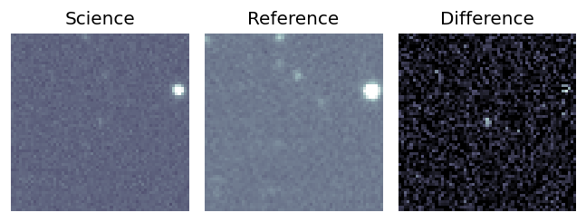
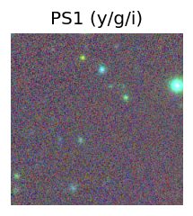
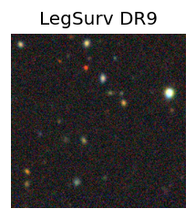
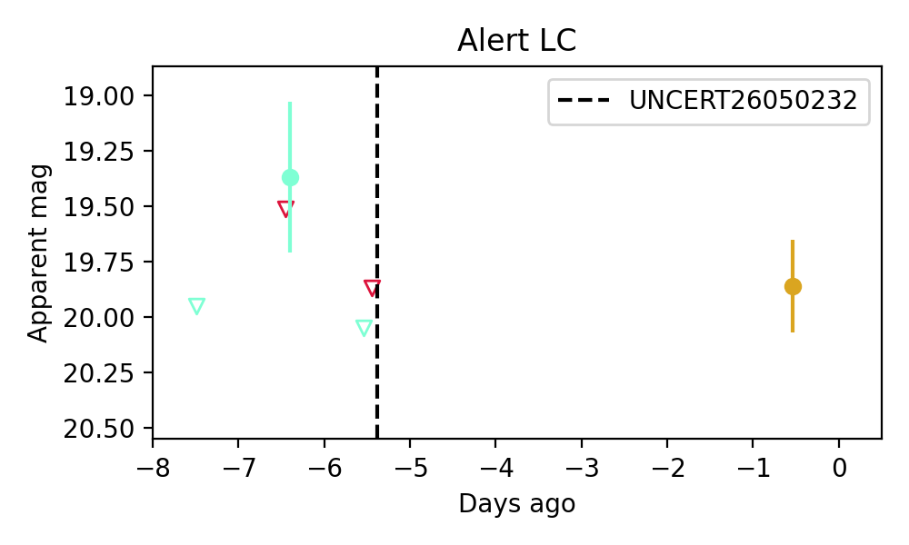
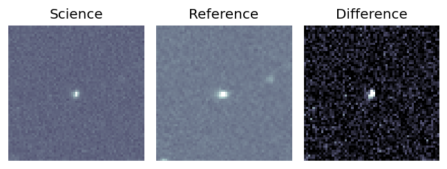
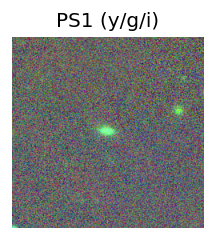
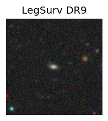
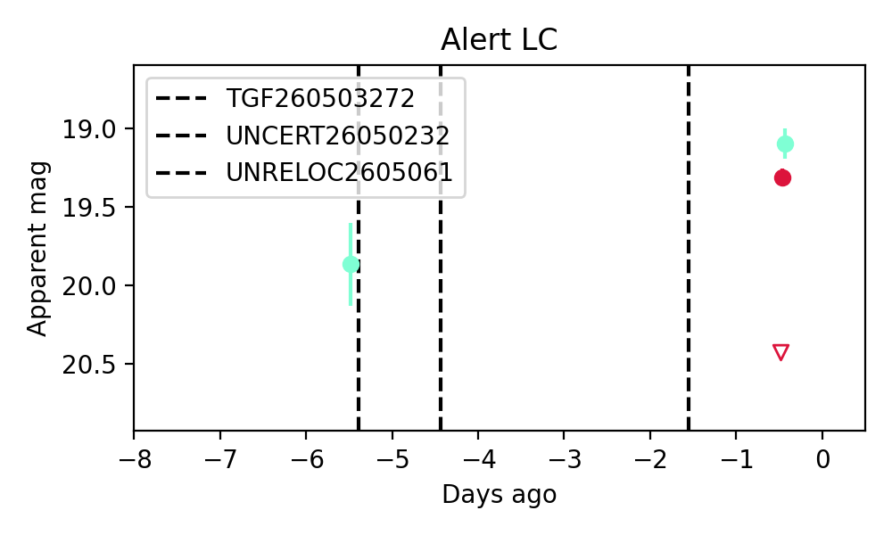

Candidate List 20260507Previous Day Next Day
Section 1: New Sources (age<1d) Section 2: Old (1-5d) sources observed last nightplaceholder
Section 1: New Afterglow/FBOT Cands Last Night (0)
Section 2: Older Sources Observed Last Night (5)
0. ZTF26aauudym (Afterglow?) [Back to Top] [Share] [Trigger Swift] [Fritz] [Lasair]RA, Dec: 149.57438, 19.56329 9h58m17.85s, 19d33m47.84sGalactic (l, b): 214.24084, 49.74295 ext(g-r) = 0.029


TESS: Sectors [21 45 46 48 72]
SDSS (10 arcsec):Found SDSS phot-z: z=0.39; peak abs mag = -22.39
PS1: 0 sources in 3 arcsec
LegacySurvey: 1 sources in 3 arcsec Closest: d = 4.99 arcsec, 316.0 deg (east of north) photoz=0.98 (68% bounds 0.85, 1.16), type=REX peak abs mag = -24.74 (68% bounds -24.36, -25.18)

Extinction-corrected gr color:
From alerts: -0.17 +/- 99 mag
Rise Rate:
g: 0.13 mag/day
r: -99 mag/day
i: 0.03 mag/day
Fade Rate:
g: 0.79 mag/day
r: -99 mag/day
i: -99 mag/day
1. ZTF26aauunhp (FBOT?) [Back to Top] [Share] [Trigger Swift] [Fritz] [Lasair]RA, Dec: 188.92829, -4.08419 12h35m42.79s, -4d-5m-3.07sGalactic (l, b): 295.39913, 58.55738 WARNING: -0.22 deg from ecliptic plane ext(g-r) = 0.038


TESS: Sectors [46 91]
PS1: 0 sources in 3 arcsec
LegacySurvey: 1 sources in 3 arcsec Closest: d = 0.34 arcsec, 304.8 deg (east of north) photoz=0.46 (68% bounds 0.18, 0.96), type=EXP peak abs mag = -24.05 (68% bounds -21.7, -26.01)

Extinction-corrected gr color:
From alerts: -0.3 +/- 0.09 mag
Extinction-corrected gi color:
From alerts: -0.64 +/- 0.09 mag
Extinction-corrected ri color:
From alerts: -0.34 +/- 0.09 mag
Rise Rate:
g: 0.16 mag/day
r: 0.22 mag/day
i: 0.13 mag/day
Fade Rate:
g: -99 mag/day
r: -99 mag/day
i: -99 mag/day
2. ZTF26aauvylo (FBOT?) [Back to Top] [Share] [Trigger Swift] [Fritz] [Lasair]RA, Dec: 208.08616, 51.94642 13h52m20.68s, 51d56m47.12sGalactic (l, b): 102.28388, 62.67111 ext(g-r) = 0.01


TESS: Sectors [ 15 16 22 23 49 76 121]
SDSS (10 arcsec):Found SDSS phot-z: z=0.14; peak abs mag = -20.17
PS1: 0 sources in 3 arcsec
LegacySurvey: 1 sources in 3 arcsec Closest: d = 0.47 arcsec, 113.1 deg (east of north) photoz=0.21 (68% bounds 0.19, 0.25), type=SER peak abs mag = -21.08 (68% bounds -20.77, -21.46)

Extinction-corrected gr color:
From alerts: -0.22 +/- 0.11 mag
Rise Rate:
g: 0.15 mag/day
r: 75.01 mag/day
i: -99 mag/day
Fade Rate:
g: -99 mag/day
r: -99 mag/day
i: -99 mag/day
3. ZTF26aauwadk (FBOT?) [Back to Top] [Share] [Trigger Swift] [Fritz] [Lasair]RA, Dec: 171.52137, 54.514 11h26m5.13s, 54d30m50.41sGalactic (l, b): 146.76708, 58.48614 ext(g-r) = 0.017


TESS: Sectors [21 48 75]
SDSS (10 arcsec):Found SDSS phot-z: z=0.29; peak abs mag = -22.58
PS1: 0 sources in 3 arcsec
LegacySurvey: 1 sources in 3 arcsec Closest: d = 0.05 arcsec, 100.8 deg (east of north) photoz=0.14 (68% bounds 0.09, 0.39), type=REX peak abs mag = -20.82 (68% bounds -19.83, -23.29)

Extinction-corrected gr color:
From alerts: -0.28 +/- 0.06 mag
Rise Rate:
g: 0.26 mag/day
r: 0.22 mag/day
i: -99 mag/day
Fade Rate:
g: -99 mag/day
r: -99 mag/day
i: -99 mag/day
4. ZTF26aauxeux (FBOT?) [Back to Top] [Share] [Trigger Swift] [Fritz] [Lasair]RA, Dec: 238.77385, 1.89684 15h55m5.73s, 1d53m48.61sGalactic (l, b): 11.09974, 39.34196 ext(g-r) = 0.091


TESS: Sectors [ 51 117]
SDSS (10 arcsec):Found SDSS phot-z: z=0.27; peak abs mag = -22.74
PS1: 0 sources in 3 arcsec
LegacySurvey: 1 sources in 3 arcsec Closest: d = 0.05 arcsec, 189.0 deg (east of north) photoz=0.11 (68% bounds 0.09, 0.16), type=REX peak abs mag = -20.42 (68% bounds -19.84, -21.14)

Extinction-corrected gr color:
From alerts: -0.19 +/- 0.14 mag
Extinction-corrected gi color:
From alerts: -0.32 +/- 0.08 mag
Extinction-corrected ri color:
From alerts: -0.13 +/- 0.15 mag
Consistent with synchrotron, g-r>0!
Rise Rate:
g: 0.23 mag/day
r: 0.36 mag/day
i: 0.19 mag/day
Fade Rate:
g: -99 mag/day
r: -99 mag/day
i: -99 mag/day